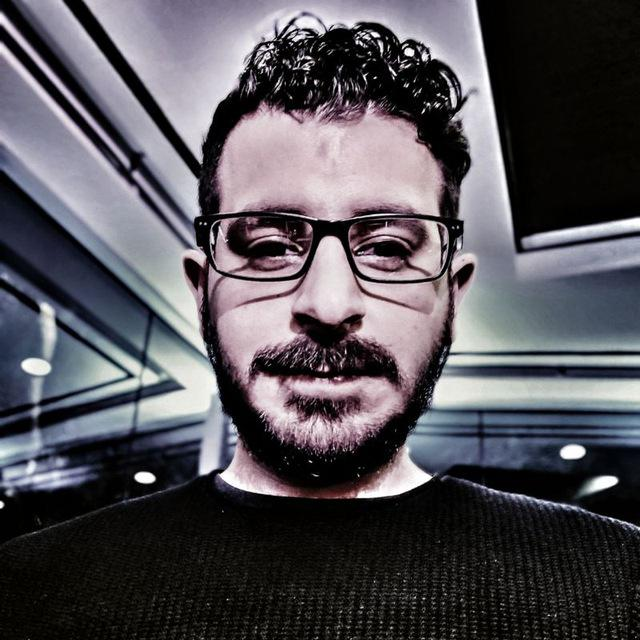

Hello! I am Faran, soon to be a full stack web developer. I have experience in C#, but majority of
my experience goes to physical security and designing physical security protocols. Also have minor
experience in law-enforcement.
I am originally from Iran. In 2010 I made a decision to relocate and move to United States, and
this was a great change and very interesting. Before moving to US I attended IT Professional University
in Iran, and that’s where I learned how to work with C#. After learning this programing language, I
have designed and supported many windows based software for auto dealerships and fast foods.
On this interesting road to US, I had to switch career path because of my degree evaluation with
department
of education here. It was very challenging but nothing that I couldn’t do! Designing security protocols
it
could be really interesting or very boring, it is absolutely different for every single person. But now,
I am
trying to go back to the field that I have lots of love and passion for, and I am %100 sure that this
is the right field of work for me.
Outside of work I enjoy playing ping-pong and football with my friends and family.
Connect with me on LinkedIn.